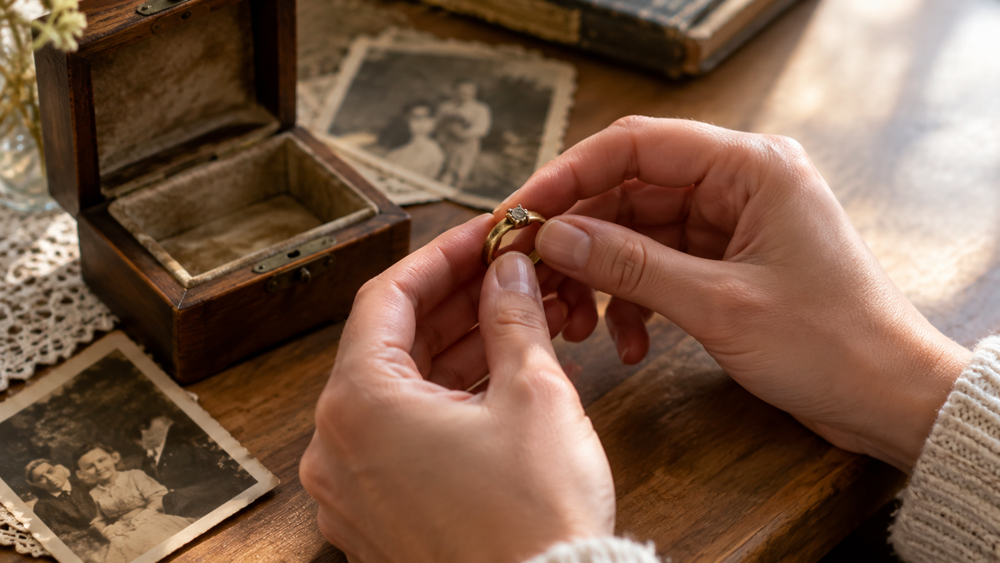

Мой друг однажды подарил девушке кольцо. Не помолвочное — просто красивое, серебряное, с маленьким камнем. Она посмотрела на коробочку, потом на него, и спросила: «Это... что-то значит?» Он растерялся. Он просто хотел сделать приятно. А она услышала вопрос, на который он не был готов отвечать.
Вот в чём сложность. Кольцо — единственный подарок, который почти невозможно вручить нейтрально. Оно всегда что-то говорит. И важно понимать, что именно вы говорите.
Почему кольцо — особый символ
Кольцо — самая древняя форма украшения, которая дошла до нас почти без изменений. И у этой формы есть встроенный смысл, который работает независимо от того, знаете вы о нём или нет.
Кольцо — это круг. У круга нет начала и нет конца. Именно поэтому кольцо с древности стало символом вечности, непрерывности и связи. В Древнем Египте кольца носили как знак принадлежности к роду. В Древнем Риме кольцо стало знаком помолвки — и эта традиция жива до сих пор.
Но есть второй смысл, менее известный. Кольцо — это замкнутая форма. Надеть кольцо на палец — значит замкнуть круг, включить человека в свой. Именно поэтому кольцо всегда воспринималось как знак принадлежности, а не просто украшение.
Когда вы дарите кольцо, вы неосознанно повторяете жест, которому несколько тысяч лет. И человек, который получает кольцо, тоже это чувствует — даже если не может объяснить словами.
Кольцо в разных культурах
Понимание кольца зависит от культуры. И если вы дарите его человеку из другой традиции, стоит знать разницу.
В западной культуре кольцо — в первую очередь знак романтических отношений. Помолвка, свадьба, обещание. Даже простое кольцо в подарок читается как намёк на серьёзность.
В восточных культурах кольцо может означать другое. В Индии, например, кольцо на определённом пальце указывает на статус человека — женат, не женат, вдовец. В Китае кольцо часто дарят как талисман, а не как романтический знак.
В славянской традиции кольцо — оберег. Его носили, чтобы защититься от злых сил. Дарили, чтобы пожелать защиты. Это значение почти забылось, но оно живёт в языке: «обручальное» происходит от «обруч», то есть защитный круг.
Что это значит для нас: кольцо — не универсальный подарок. Прежде чем дарить, стоит понять, как его прочитает конкретный человек.
Что значит подарить кольцо: 4 разных послания
Одно и то же кольцо может говорить разное — в зависимости от контекста. Вот четыре основных послания.
Первое — «ты — моя». Это самое сильное значение. Кольцо как знак принадлежности. Так дарят помолвочные кольца. Так дарят обручальные. Так иногда дарят простое кольцо, когда слов для признания ещё нет.
Второе — «я тебя помню». Кольцо как память. Если вы дарите кольцо в честь важного события — встречи, первой поездки, дня знакомства — оно становится не украшением, а якорем. Так дарят кольца с гравировкой, с датой, с именем.
Третье — «я тебя защищаю». Это старое значение, но оно работает. Кольцо как оберег. Если дарите человеку, который переживает трудный период, кольцо может стать для него знаком поддержки.
Четвёртое — «просто красиво». Это самый опасный вариант. Потому что кольцо почти никогда не читается как «просто красиво». Получатель всё равно будет искать смысл. Если вы не вложили — он вложит сам. И не факт, что тот, который вы имели в виду.
Кому дарят кольца и когда
Кольцо — подарок с очень узким кругом адресатов. Вот где оно уместно.
Любимой — на помолвку, на годовщину, на важную дату. Здесь кольцо работает на полную силу.
Жене или мужу — на годовщину свадьбы, на значимый юбилей. Кольцо как знак «мы вместе уже столько лет».
Маме или бабушке — на юбилей. Но здесь важно выбрать форму: не классическое обручальное, а декоративное кольцо с камнем или гравировкой.
Дочери — на совершеннолетие. Кольцо как знак «ты стала взрослой». Традиция, которая возвращается.
Себе — как покупка, а не подарок. Здесь кольцо не требует объяснений.

Приметы про кольцо
Кольцо окружено приметами больше, чем почти любой другой подарок. И вот что важно: большая часть этих примет — не про подарок вообще, а про находку.
Найти кольцо — считается добрым знаком. Потерять — наоборот. Дарить кольцо — можно, и это не считается плохой приметой. В отличие от часов, ножей или зеркала, кольцо не несёт в себе негативного значения.
Но есть один нюанс. Если дарите кольцо, которое уже кому-то принадлежало — например, фамильное — стоит рассказать его историю. Так вы не просто передаёте вещь, а продолжаете традицию. Это ценится выше, чем новое кольцо из магазина.
Ещё одна примета — кольцо нельзя мерить чужое. Считается, что вместе с кольцом можно перенять судьбу его владельца. Эта примета старая, но живая. Если дарите кольцо, дайте его владельцу самому надеть на палец.
Когда кольцо — ошибка
Кольцо легко может стать неудачным подарком. Вот сценарии, где лучше выбрать что-то другое.
Коллеге или знакомой — без близких отношений. Кольцо прочитается как романтический знак, даже если вы этого не имели в виду.
Замужней женщине — если вы не её муж. Это просто опасный подарок. Даже если вы дарите от коллектива, лучше выбрать другое.
Девушке на первых свиданиях — если вы не готовы к серьёзному разговору. Кольцо задаст вопрос, на который придётся отвечать.
Человеку, который не носит украшения. Кольцо будет лежать в шкатулке. Это не оскорбление, но и не подарок.
Человеку другой культуры — без понимания, как там читается кольцо. Можно случайно сказать не то, что хотели.
Что сказать, когда вручаете
Кольцо требует слов. Если вы просто отдадите коробочку — человек сам придумает значение. А оно может оказаться не тем, что вы имели в виду.
Скажите одну фразу. Не длинную, не пафосную. Просто объясните, что вы вложили.
«Это кольцо — про то, что ты для меня важна». «Это на память о нашей поездке». «Это просто потому, что я тебя увидел в нём». «Это знак, что я рядом».
Одна фраза — и кольцо перестаёт быть загадкой. Оно становится тем, чем вы хотели его сделать.
В итоге
Кольцо — не просто украшение. Это послание, которое трудно отменить. Оно всегда говорит — и важно, чтобы вы говорили то, что имели в виду.
И если задуматься, за этим стоит простая вещь. Кольцо — это форма, которая уже всё сказала за вас. Вам остаётся только вложить правильный смысл.
Мой друг, кстати, потом объяснился. И сейчас они вместе. Кольцо оказалось правдой, даже если он сам не сразу это понял.
А вам дарили кольцо? И что оно для вас значило? Напишите в комментариях — мне интересно.